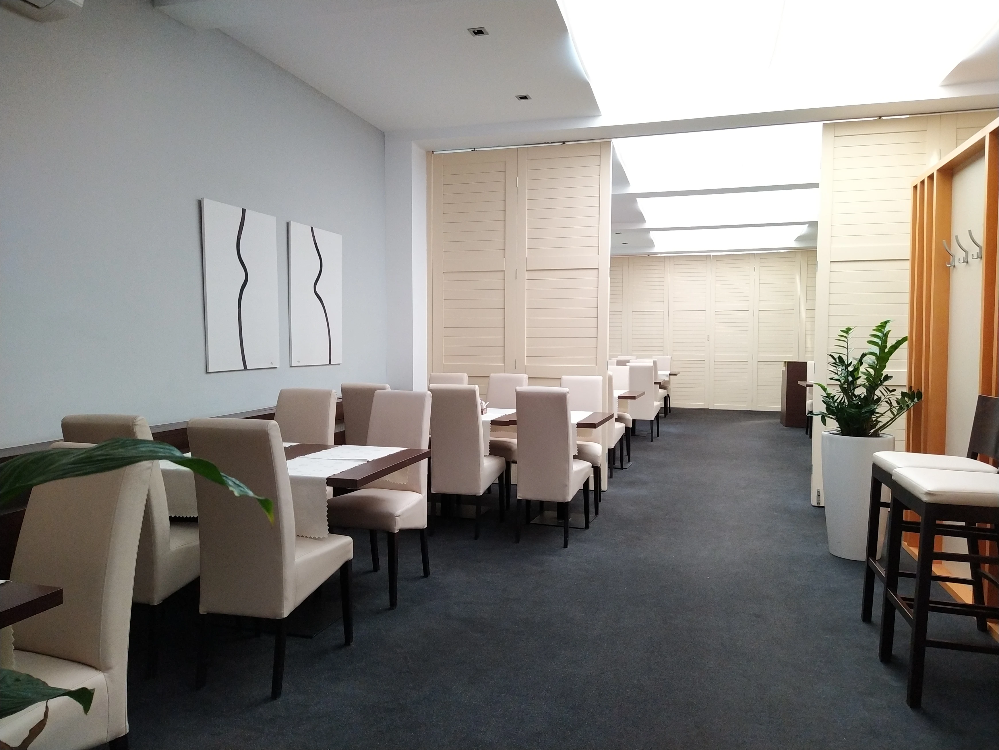
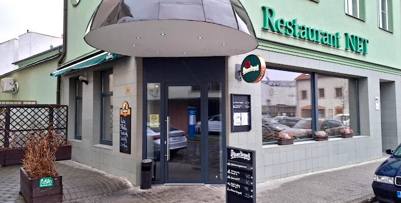

Poctivá kuchyně v srdci Hradiště
Polední menu každý všední den, večery beze spěchu a salónek až pro šedesát hostů. Pár kroků od Mariánského náměstí.

Oslavy & firemní akce
Salónek pro šedesát hostů
Narozeniny, promoce, svatební hostina i firemní večírek. Postaráme se o vše od prostřené tabule po poslední přípitek.
- Kapacita
- až 60 osob
- Kuchyně
- vlastní, menu na míru
- Technika
- projektor, mikrofon, AV
- Komfort
- klimatizace, bezbariérový přístup
- Cena
- od 350 Kč / osoba dle menu
Nezávazná poptávka
Z naší kuchyně
Jídelní lístek
Výběr z lístku. Kompletní nabídku Vám rádi předložíme v restauraci.
Zkušenosti hostů
Co se povídá u stolů
„Chodíme sem na oběd pravidelně a nikdy jsme nebyli zklamáni. Rychlá obsluha, poctivé porce a skvělý poměr cena–kvalita.“
„Slavili jsme narozeniny v salónku a personál se postaral o vše. Jídlo připravené přesně podle přání. Doporučuji každému.“
„Skrytý klenot u Mariánského náměstí. Těžko v Uherském Hradišti najdete takovou kvalitu za tuto cenu.“
4,2 ★ z 708 recenzí na Google
Náš příběh
Rodinný podnik v srdci města
Restaurant NET najdete pár kroků od Mariánského náměstí v centru Uherského Hradiště. Vaříme domácí moravskou kuchyni z čerstvých surovin: v poledne rychle a poctivě, večer beze spěchu.
- 0
- míst v salónku
- 0
- recenzí na Google
- 9:30
- otevíráme denně

Přijďte nás navštívit
Kontakt
Zavolejte nám
+420 572 552 597
WhatsApp
napište zprávu
Restaurant NET
Jindřícha Průchy 310
686 01 Uherské Hradiště
u Mariánského náměstí
Jindřícha Průchy 310
686 01 Uherské Hradiště
u Mariánského náměstí
| Pondělí – Pátek | 9:30 – 23:00 |
| Sobota – Neděle | 9:30 – 23:59 |
Přijímáme stravenky: Sodexo · Up · Edenred · Pluxee